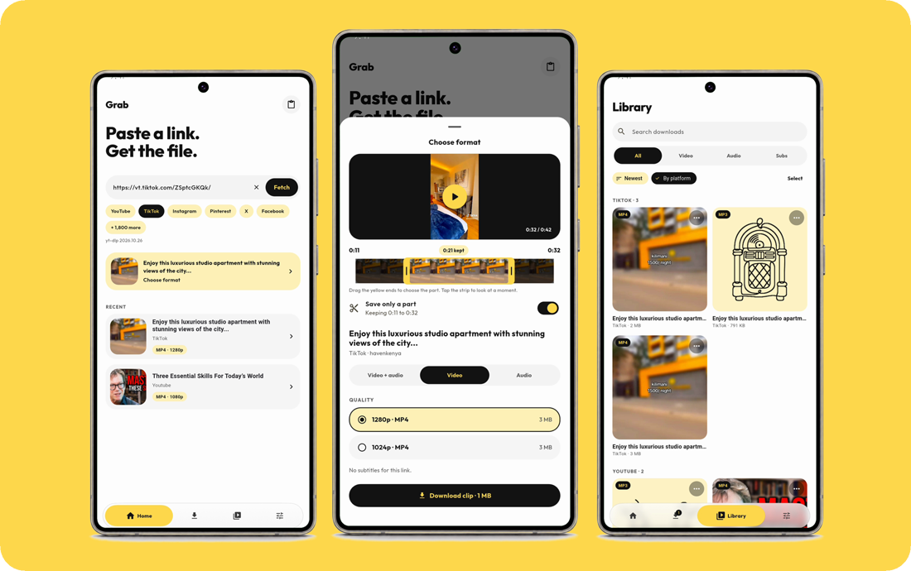
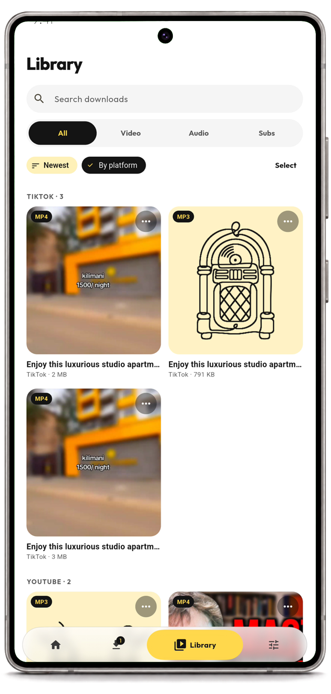

Audio only
MP3, M4A, Opus or FLAC, or the video plus its soundtrack as a separate file.
Free · Open source · No ads
Save video, audio and subtitles from TikTok, YouTube, Instagram, Pinterest and 1,800+ other sites. Beautifully simple, on your phone and on your computer.
Android 7.0+, macOS 12+ and Windows 10+.

1,800+
sites. One paste.
TikTok, YouTube, Instagram, Pinterest, X, Facebook, Vimeo, SoundCloud and the long tail, powered by yt-dlp.
Preview and trim
Play the video before you save it. Turn on Save only a part and drag the yellow ends of the filmstrip. You see the exact frame you're cutting at, and Grab downloads just that clip.

Downloads that don't give up
Live percent, speed and time left. Pause any download and resume it later. If the connection drops, Grab waits and tries again by itself.

Your library
Sort by date, size or site. Group by platform. Pick several to share or delete. Audio gets one of fifty line-drawn covers, and plays in the background with lock-screen controls.

MP3, M4A, Opus or FLAC, or the video plus its soundtrack as a separate file.
Save as .srt files or embed them right into the video.
Paste a playlist or channel and pick exactly which items to grab.
Cut up to 40 seconds of any file and set it as your ringtone.
Share to Grab, use the Quick Settings tile, or tap “Grab it” on a copied link.
The engine updates itself daily, and new versions install over the old one.
Grab talks only to the sites you download from, and to GitHub when it checks for updates. Your downloads and history never leave your device. The code is open for anyone to read.
Free forever. GPL-3.0 licensed.
Android 7.0 and newer. Most phones need the arm64 build.
Download APKApple silicon and Intel. The same Grab, built for your Mac.
Download for MacWindows 10 and 11. Paste a link, get the file.
Download for WindowsYes. No subscriptions, no ads, no paid tiers. It's open-source software under the GPL-3.0 licence.
Google Play doesn't allow apps that download from YouTube. Grab is published on GitHub, with F-Droid on the way. Updates install from inside the app.
Anything yt-dlp supports: over 1,800 sites. Some private or age-restricted content needs a login and won't work yet.
Sites change often. Grab updates its engine daily; you can also tap Check for engine update in Settings. Still stuck? Report it with the link.
Download only what you have the right to save, and respect creators and each site's terms. Grab isn't affiliated with any site it supports.